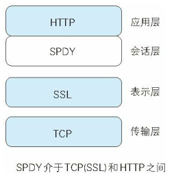

SPDY
2019-01-10 @wsl
1. HTTP 的瓶颈
使用 HTTP 协议探知服务器上是否有内容更新，就必须频繁地从客户端到服务器端进行确认。如果服务器上没有内容更新，那么就会产生徒劳的通信。
若想在现有 Web 实现所需的功能，以下这些 HTTP 标准就会成为瓶颈。
- 一条连接上只可发送一个请求。
- 请求只能从客户端开始。客户端不可以接收除响应以外的指令。
- 请求 / 响应首部未经压缩就发送。 首部信息越多延迟越大。
- 发送冗长的首部。 每次互相发送相同的首部造成的浪费较多。
- 可任意选择数据压缩格式。非强制压缩发送。
Ajax 的解决方法 Ajax（Asynchronous JavaScript and XML，异 步 JavaScript 与 XML技术）是一种有效利用 JavaScript 和 DOM（Document Object Model，文档对象模型）的操作，以达到局部 Web 页面替换加载的异步通信手段。和以前的同步通信相比，由于它只更新一部分页面，响应中传输的数据量会因此而减少，这一优点显而易见。
Ajax 的核心技术是名为 XMLHttpRequest 的 API，通过 JavaScript 脚本语言的调用就能和服务器进行 HTTP 通信。借由这种手段，就能从已加载完毕的 Web 页面上发起请求，只更新局部页面。
而利用 Ajax 实时地从服务器获取内容，有可能会导致大量请求产生。另外，Ajax 仍未解决 HTTP 协议本身存在的问题。
Comet 的解决方法 一旦服务器端有内容更新了，Comet 不会让请求等待，而是直接给客户端返回响应。这是一种通过延迟应答，模拟实现服务器端向客户端推送（Server Push）的功能。
通常，服务器端接收到请求，在处理完毕后就会立即返回响应，但为了实现推送功能，Comet 会先将响应置于挂起状态，当服务器端有内容更新时，再返回该响应。因此，服务器端一旦有更新，就可以立即反馈给客户端。
内容上虽然可以做到实时更新，但为了保留响应，一次连接的持续时间也变长了。期间，为了维持连接会消耗更多的资源。另外，Comet 也仍未解决 HTTP 协议本身存在的问题。
SPDY的目标
陆续出现的 Ajax 和 Comet 等提高易用性的技术，一定程度上使 HTTP 得到了改善，但 HTTP 协议本身的限制也令人有些束手无策。为了进行根本性的改善，需要有一些协议层面上的改动。
处于持续开发状态中的 SPDY 协议，正是为了在协议级别消除 HTTP 所遭遇的瓶颈。
2. SPDY 的设计与功能
SPDY 没有完全改写 HTTP 协议，而是在 TCP/IP 的应用层与运输层之间通过新加会话层的形式运作。同时，考虑到安全性问题，SPDY 规定通信中使用 SSL。
SPDY 以会话层的形式加入，控制对数据的流动，但还是采用 HTTP 建立通信连接。因此，可照常使用 HTTP 的 GET 和 POST 等方法、Cookie 以及 HTTP 报文等。

使用 SPDY 后， HTTP 协议额外获得以下功能。
多路复用流
通过单一的 TCP 连接，可以无限制处理多个 HTTP 请求。所有请求的处理都在一条 TCP 连接上完成，因此 TCP 的处理效率得到提高。
赋予请求优先级
SPDY 不仅可以无限制地并发处理请求，还可以给请求逐个分配优先级顺序。这样主要是为了在发送多个请求时，解决因带宽低而导致响应变慢的问题。
压缩 HTTP 首部
压缩 HTTP 请求和响应的首部。这样一来，通信产生的数据包数量和发送的字节数就更少了。
推送功能
支持服务器主动向客户端推送数据的功能。这样，服务器可直接发送数据，而不必等待客户端的请求。
服务器提示功能
服务器可以主动提示客户端请求所需的资源。由于在客户端发现资源之前就可以获知资源的存在，因此在资源已缓存等情况下，可以避免发送不必要的请求。
3. 效果
希望使用 SPDY 时，Web 的内容端不必做什么特别改动，而 Web 浏览器及 Web 服务器都要为对应 SPDY 做出一定程度上的改动。有好几家 Web 浏览器已经针对 SPDY 做出了相应的调整。另外，Web 服务器也进行了实验性质的应用，但把该技术导入实际的 Web 网站却进展不佳。
因为 SPDY 基本上只是将单个域名（IP 地址）的通信多路复用，所以当一个 Web 网站上使用多个域名下的资源，改善效果就会受到限制。
SPDY 的确是一种可有效消除 HTTP 瓶颈的技术，但很多 Web 网站存在的问题并非仅仅是由 HTTP 瓶颈所导致。对 Web 本身的速度提升，还应该从其他可细致钻研的地方入手，比如改善 Web 内容的编写方式等。